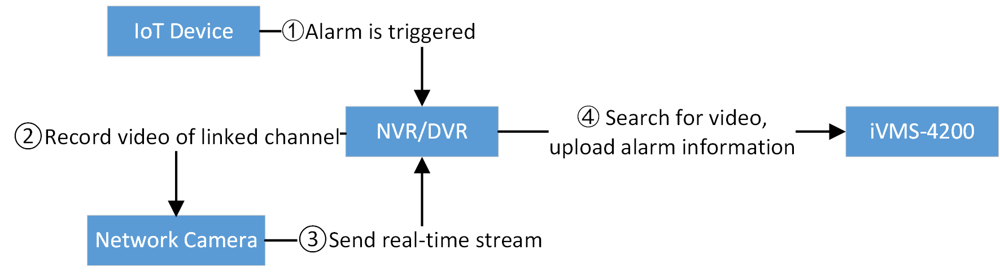

The IoT devices here include access control terminal, security control panel, video intercom, analog camera RF, etc. The NVR/DVR supports accessing IoT devices for device management, status search, event/alarm linkage, and alarm receiving. When the IoT devices are added to NVR/DVR, the NVR/DVR can receive the alarm of IoT device, link the channel for recording, and receive the real-time stream when alarm is triggered.
This chapter mainly introduces the methods of adding IoT devices, and configuring event/alarm of IoT devices.
